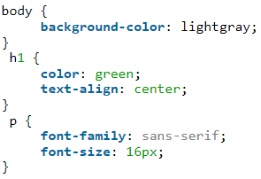
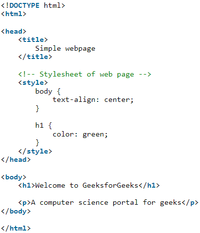
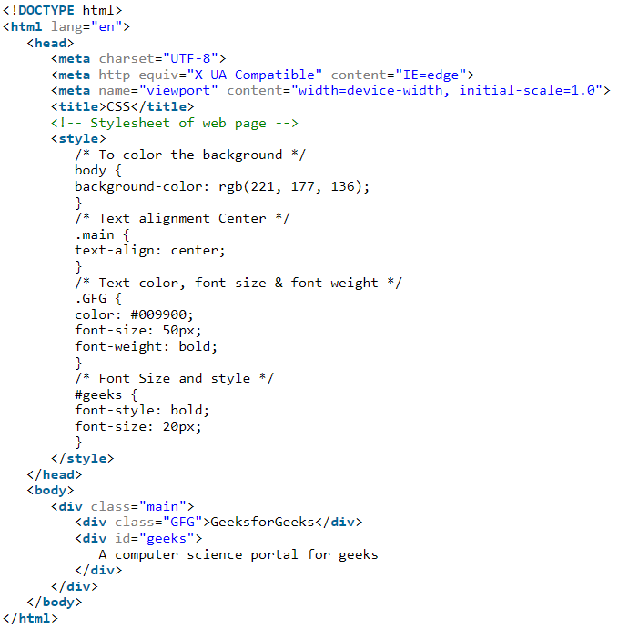

CSS (Cascading Style Sheets) is used to apply styles to web pages. Cascading Style Sheets are fondly referred to as CSS. It is used to make web pages presentable. The reason for using this is to simplify the process of making web pages presentable. It allows you to apply styles on web pages. More importantly, it enables you to do this independently of the HTML that makes up each web page.

Why we learn CSS?
Styling is an essential property for any website. It increases the standards and overall look of the website that makes it easier for the user to interact with it. A website can be made without CSS, as styling is MUST since no user would want to interact with a dull and shabby website. So for knowing Web Development, learning CSS is mandatory.
Basic Format: It is the basic structure of a webpage.
There are three types of CSS which are given below:
- Inline: Inline CSS contains the CSS property in the body section attached with the element known as inline CSS.
- Internal or Embedded: The CSS ruleset should be within the HTML file in the head section i.e the CSS is embedded within the HTML file.
- External: External CSS contains a separate CSS file that contains only style property with the help of tag attributes.
Example 1: Let’s see a small example of HTML webpage with CSS styles. Here, we use styles to set the alignment and text color of a webpage.
Output:
Example 2: In this example, we will see how to apply styles using class and id.
Output
What does CSS mean?
Tags for formatting a web page were never intended in HTML. HTML was established to define a web page’s content. The addition of tags like <font> color attributes to HTML created a big problem for web developers. The creation of large websites, where fonts and color information were added to each page, became a time-consuming and costly procedure. CSS was established to address this issue. CSS eliminated the HTML page’s style formatting.
How CSS is different from HTML?
- HTML is used to define a structure of a web page whereas CSS is used to style the web pages by using different styling features.
- HTML consists of tags inside which text is enclosed and CSS consists of selectors and declaration blocks.
- CSS can be internal or external depending upon the requirement.
- We cannot use HTML inside a CSS sheet but we can use CSS inside an HTML document.
- CSS has comparatively higher backup and support than HTML.
Why is CSS used in HTML?
- Solves a big problem: Font, color, background style, element alignments, border, and size tags had to be duplicated on each web page before CSS. This was a lengthy procedure.
- Saves a lot of time: Because CSS style definitions are stored in external CSS files, updating only one file can modify the entire website.
- Provide more attributes: CSS gives more specific features for defining the look and feel of a website than simple HTML.
- Pages load faster: CSS doesn’t require you to write HTML tag attributes all of the time. A tag’s rule can be written once and applied to all instances of the tag. As a result, CSS uses less code, resulting in speedier download times.
- Easier Website maintenance: CSS makes website maintenance much easier. If we need to make a global change to the file, we can simply alter the style, which will update all of the elements on the web page.
- Multiple device compatibility:We can use CSS with older language versions because it is compatible with them. CSS makes it possible to optimize material for several devices.
- Base for web development: HTML and CSS is the basic skill that every web developer should know. It is the basic skill that is required for building a website.
- Makes your website look attractive: A website that’s dull and plain will not attract the user, so adding some style would surely make your website presentable to the user.
- Makes the design come alive:A web developer is responsible for making the design given to him as a live product. It is used for styling to develop the design of the website.
- Increases user experience of the website: A website with a simple yet beautiful UI would help the users to go through the website easily. It is used to make the user interface better.
- More career opportunities: Since CSS is a basic requirement while learning Web Development, therefor there are abundant career opportunities for it. As a freelancer, you can land up to many projects.
cascading style sheets , fondly referred to as CSS, is a simply designed language intended to simplify the process of making web pages presentable. CSS allows you to apply styles to web pages. More importantly, CSS enables you to do this independent of the HTML that makes up each web page. It describes how a webpage should look: it prescribes colors, fonts, spacing, and much more. In short, you can make your website look however you want. CSS lets developers and designers define how it behaves, including how elements are positioned in the browser.
While html uses tags, css uses rulesets. CSS is easy to learn and understand, but it provides powerful control over the presentation of an HTML document.

Why CSS?
- CSS saves time: You can write CSS once and reuse the same sheet in multiple HTML pages.
- Easy Maintenance: To make a global change simply change the style, and all elements in all the webpages will be updated automatically.
- Search Engines: CSS is considered a clean coding technique, which means search engines won’t have to struggle to “read” its content.
- Superior styles to HTML: CSS has a much wider array of attributes than HTML, so you can give a far better look to your HTML page in comparison to HTML attributes.
- Offline Browsing: CSS can store web applications locally with the help of an offline cache. Using this we can view offline websites.
CSS versions release years:
CSS Syntax:
CSS comprises style rules that are interpreted by the browser and then applied to the corresponding elements in your document. A style rule set consists of a selector and declaration block.Selector:
h1
Declaration:
{color: red; size: 15px;}